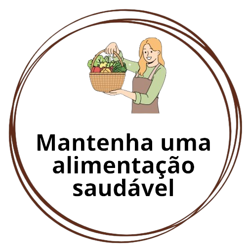
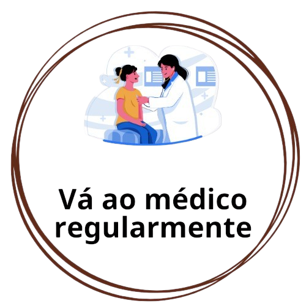
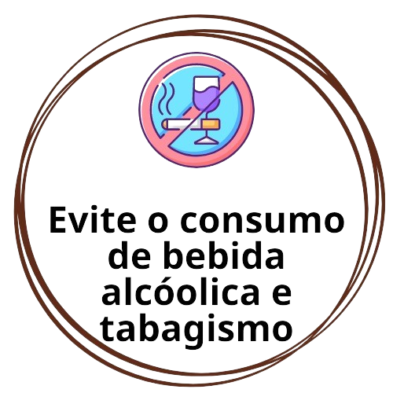

Outubro Rosa alerta sobre prevenção e diagnóstico precoce do câncer de mama. O mês de Outubro já é conhecido mundialmente como um mês marcado por ações afirmativas relacionadas à prevenção e diagnóstico precoce do câncer de mama. O movimento, conhecido como Outubro Rosa, é celebrado anualmente desde os anos 90.


Outubro Rosa promove a conscientização sobre o câncer de mama com corridas e caminhadas. Esses eventos incentivam a prevenção e o diagnóstico precoce, reunindo pessoas em apoio à causa. Participantes vestem rosa e percorrem distâncias variadas.



